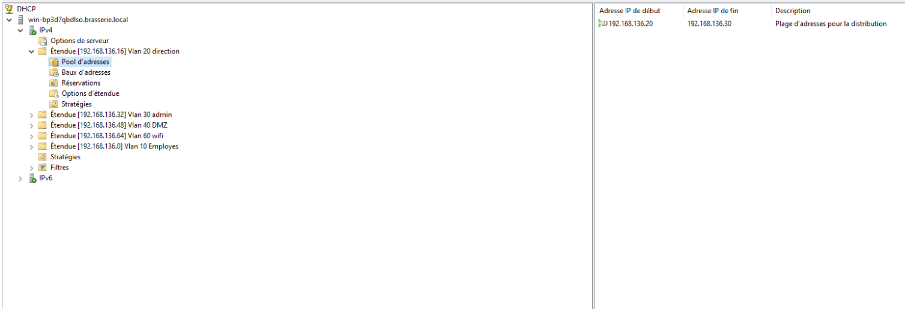
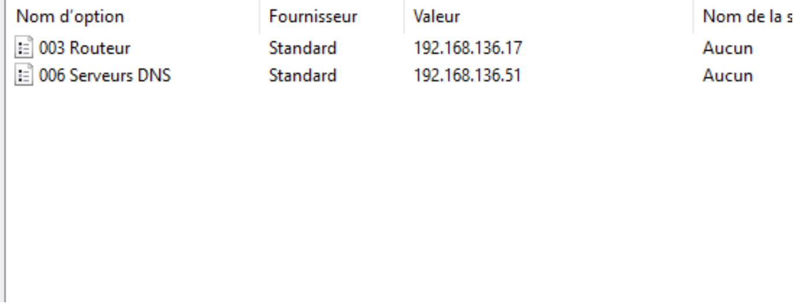

Le serveur DHCP est installé sur le Windows Server (contrôleur de domaine). Il distribue automatiquement les adresses IP à tous les PC clients de chaque VLAN. Pour que le serveur DHCP puisse distribuer des adresses à travers les VLANs, la commande ip helper-address est configurée sur chaque sous-interface du routeur.

| VLAN | Plage distribuée | Masque | Passerelle | DNS |
|---|---|---|---|---|
| 10 — Employés | 192.168.136.10 à .14 | 255.255.255.240 | 192.168.136.1 | 192.168.136.51 |
| 20 — Direction | 192.168.136.20 à .30 | 255.255.255.240 | 192.168.136.17 | 192.168.136.51 |
| 30 — Admin | 192.168.136.36 à .46 | 255.255.255.240 | 192.168.136.33 | 192.168.136.51 |
| 40 — DMZ | 192.168.136.52 à .62 | 255.255.255.240 | 192.168.136.49 | 192.168.136.51 |
| 60 — Wifi | 192.168.136.68 à .78 | 255.255.255.240 | 192.168.136.65 | 192.168.117.181 |

interface GigabitEthernet0/0/1.10 ip helper-address 192.168.136.51 interface GigabitEthernet0/0/1.20 ip helper-address 192.168.136.51 interface GigabitEthernet0/0/1.30 ip helper-address 192.168.136.51 interface GigabitEthernet0/0/1.60 ip helper-address 192.168.136.51
Après la promotion du serveur Windows en Contrôleur de Domaine, le serveur DHCP doit être autorisé dans l'AD :
Problème 1 — Les PC ne reçoivent pas d'IP
Cause : Le serveur DHCP n'était pas autorisé dans l'Active Directory après la promotion en DC.
Solution : dhcpmgmt.msc > clic droit sur le serveur > Autoriser.
Problème 2 — Les PC ne reçoivent pas le bon DNS
Cause : L'option 006 dans les étendues DHCP pointait vers le DNS de la salle (192.168.117.181) au lieu du serveur Windows (192.168.136.51).
Solution : Modifier l'option 006 dans chaque étendue VLAN (10, 20, 30) pour pointer vers 192.168.136.51.